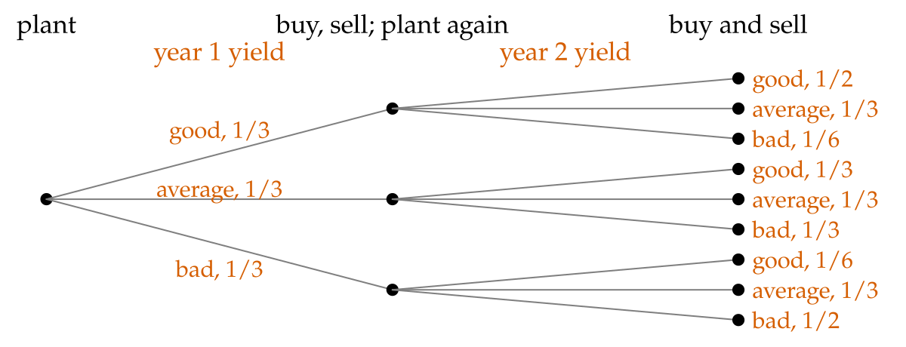

two_year = Model(HiGHS.Optimizer)
@variables(two_year, begin
x1[1:3] >= 0 # x^(1): year 1 planting
y1[1:2, a in 1:3] >= 0 # y^(1)_a: year 1 purchases
z1[1:4, a in 1:3] >= 0 # z^(1)_a: year 1 sales
x2[1:3, a in 1:3] >= 0 # x^(2)_a: year 2 planting
y2[1:2, a in 1:3, b in 1:3] >= 0 # y^(2)_ab: year 2 purchases
z2[1:4, a in 1:3, b in 1:3] >= 0 # z^(2)_ab: year 2 sales
end)Sequential Decisions and Dynamic Programming
Lecture 20
November 18, 2026
Review of Last Class
Two-Stage Problems with Recourse
- The farmer plants wheat, corn and beets before the yield is known, then buys and sells once the harvest is in.
- Two-stage problems: one here-and-now decision, one recourse decision per scenario, weighted by probability.
- A scenario tree lays out the scenarios: each path from the root to a leaf is one.
Questions?

Text: VSRIKRISH to 22333
Multi-Stage Scenario Trees
Multi-Stage Trees
Suppose good years tend to follow good years and bad follow bad, so year 2’s probabilities depend on year 1’s yield.

Probabilities Along a Path
How likely are two bad years in a row? A good year, then a bad one?
Multiply the branch probabilities along the path, each conditional on the branches before it:
\[ \begin{aligned} P(\text{bad}, \text{bad}) &= \tfrac{1}{3} \times \tfrac{1}{2} = \tfrac{1}{6} \\ P(\text{good}, \text{bad}) &= \tfrac{1}{3} \times \tfrac{1}{6} = \tfrac{1}{18} \end{aligned} \]
If the years were independent, both would be \(\frac{1}{9}\).
Two-Year Decision Variables
Let \(a\) be year 1’s yield and \(b\) year 2’s, each G, A or B (good, average, bad). Which yields can each decision depend on?
- \(\mathbf{x}^{(1)}\): year 1 planting, before any yield is known
- \(\mathbf{y}^{(1)}_a\), \(\mathbf{z}^{(1)}_a\): year 1 purchases and sales, after year 1’s yield
- \(\mathbf{x}^{(2)}_a\): year 2 planting, after year 1’s yield but before year 2’s
- \(\mathbf{y}^{(2)}_{ab}\), \(\mathbf{z}^{(2)}_{ab}\): year 2 purchases and sales, after both
Two-Year Objective
\[ \begin{aligned} \max \quad & -\mathbf{c}^\top \mathbf{x}^{(1)} + \sum_a p_a \Big[ r\big(\mathbf{y}^{(1)}_a, \mathbf{z}^{(1)}_a\big) - \mathbf{c}^\top \mathbf{x}^{(2)}_a \\ & \qquad + \sum_b p_{b \mid a}\, r\big(\mathbf{y}^{(2)}_{ab}, \mathbf{z}^{(2)}_{ab}\big) \Big] \end{aligned} \]
\(r\) is the money from sales minus purchases, and \(p_{b \mid a}\) the probability of year 2 yield \(b\) after year 1 yield \(a\). The year 2 planting cost sits outside the sum over \(b\): one planting for all three year 2 outcomes.
Non-Anticipativity
Why \(\mathbf{x}^{(2)}_a\) and not \(\mathbf{x}^{(2)}_{ab}\), like the year 2 sales?
With \(\mathbf{x}^{(2)}_{ab}\), the planting for path BG could be chosen knowing year 2 will be good. A decision can depend only on what is known when it is made: non-anticipativity. Indexing by \(a\) alone is the same as requiring
\[\mathbf{x}^{(2)}_{aG} = \mathbf{x}^{(2)}_{aA} = \mathbf{x}^{(2)}_{aB} \quad \text{for each } a.\]
Variables in JuMP
Each variable gets an index for each yield known when it is decided: x2 has one for a but none for b.
Objective in JuMP
# p_{b|a}: probability of year 2 yield b (column) after year 1 yield a (row)
persistence = [1/2 1/3 1/6; 1/3 1/3 1/3; 1/6 1/3 1/2]
function net_sales(y, z) # r(y, z): money from sales minus purchases
sales = sell_price[1] * z[1] + sell_price[2] * z[2] +
beet_price * z[3] + beet_excess_price * z[4]
return sales - buy_price[1] * y[1] - buy_price[2] * y[2]
end
@objective(two_year, Max, -sum(plant_cost .* x1) + sum(prob[a] * (
net_sales(y1[:, a], z1[:, a]) - sum(plant_cost .* x2[:, a]) +
sum(persistence[a, b] * net_sales(y2[:, a, b], z2[:, a, b])
for b in 1:3))
for a in 1:3))prob[a] is \(p_a\) and persistence[a, b] is \(p_{b \mid a}\); the year 2 planting cost sits outside the sum over b.
Constraints in JuMP
Code
# One year's feed and beet constraints, for planting x, purchases y and
# sales z, in a year with yield factor f: the same as in the two-stage model
function add_year_constraints!(model, x, y, z, f)
crop_yield = avg_yield .* f
@constraint(model, crop_yield[1] * x[1] + y[1] - z[1] >= feed_need[1])
@constraint(model, crop_yield[2] * x[2] + y[2] - z[2] >= feed_need[2])
@constraint(model, z[3] + z[4] <= crop_yield[3] * x[3])
@constraint(model, z[3] <= beet_quota)
end@constraint(two_year, sum(x1) <= land)
for a in 1:3
# year 1, after yield a
add_year_constraints!(two_year, x1, y1[:, a], z1[:, a], yield_factor[a])
@constraint(two_year, sum(x2[:, a]) <= land)
for b in 1:3
# year 2, after yields a and b: the same x2[:, a] for every b
add_year_constraints!(two_year, x2[:, a], y2[:, a, b], z2[:, a, b],
yield_factor[b])
end
end
set_silent(two_year)
optimize!(two_year)The year 2 constraints use the same x2[:, a] for every b.
Two-Year Planting Plan
Code
| Year 1 yield | Wheat (acres) | Corn (acres) | Beets (acres) |
|---|---|---|---|
| Good | 170 | 80 | 250 |
| Average | 170 | 80 | 250 |
| Bad | 100 | 100 | 300 |
After a bad year, the farmer plants enough wheat and corn to cover the feed even if year 2 is bad too.
Scenario Trees Grow Fast
| Years | Scenarios (leaves) | Nodes |
|---|---|---|
| 1 | 3 | 4 |
| 2 | 9 | 13 |
| 3 | 27 | 40 |
| 5 | 243 | 364 |
| 10 | 59,049 | 88,573 |
Raises the question: how do we make decisions in a sequence without writing out the tree?
Sequential Decisions
Decisions Linked Over Time
- Reservoir: water released this month is not there next month.
- Lake: \(P_{t+1} = P_t + L_t - sP_t + R(P_t)\). This year’s loading \(L_t\) changes next year’s phosphorus \(P_{t+1}\).
- Fishery: this season’s harvest changes next season’s stock.
Why not just optimize each month on its own?
A Reservoir in a Dry Season
- Storage holds up to 4 units, and starts full.
- Each month: release \(r\) (at most what is stored), then the month’s inflow arrives; anything above 4 spills.
- Inflows over the season: 1, 1, 0.
- Benefit of a month’s release:
| Release | 0 | 1 | 2 | 3 | 4 |
|---|---|---|---|---|---|
| Benefit | 0 | 6 | 10 | 12 | 13 |
The Greedy Plan
Greedy: release everything available, every month.
It releases 4, 1, 1, for a total benefit of 25.
Can you beat 25?
Releasing 2, 2, 2 gives a total of 30.
Elements of a Dynamic Program
- Stage \(t\): the month.
- State \(s_t\): storage at the start of the month; it carries the past forward.
- Decision \(r_t\): the release, with \(0 \leq r_t \leq s_t\).
- Transition: \(s_{t+1} = \min(s_t - r_t + I_t,\ 4)\).
- Value function \(V_t(s)\): the best total benefit from month \(t\) to the end, starting with storage \(s\).
- Policy: the best release for each month and storage level.
Backward Induction
The Last Month
In the last month, this model gives water left over no value, so release everything:
| Storage | 0 | 1 | 2 | 3 | 4 |
|---|---|---|---|---|---|
| Best release | 0 | 1 | 2 | 3 | 4 |
| Value \(V_3(s)\) | 0 | 6 | 10 | 12 | 13 |
Now step backwards: knowing \(V_3\), month 2 is a one-step problem.
Month 2 by Hand
For each storage \(s\), try every release \(r \leq s\) (month 2’s inflow is \(I_2 =\) 1):
\[V_2(s) = \max_{r \leq s} \left[\, \text{benefit}(r) + V_3\big(\min(s - r + I_2,\ 4)\big) \right]\]
Your turn: compute \(V_2(3)\).
| Storage | 0 | 1 | 2 | 3 | 4 |
|---|---|---|---|---|---|
| Best release | 0 | 1 | 1 | 2 | 2 |
| Value \(V_2(s)\) | 6 | 12 | 16 | 20 | 22 |
Backward Induction in Code
function backward_induction(inflow; end_value=zeros(capacity + 1))
value = fill(-Inf, capacity + 1, n_months + 1) # best total from month t
policy = zeros(Int, capacity + 1, n_months) # best release
value[:, n_months + 1] = end_value # water left at the end
for t in n_months:-1:1, s in levels
for r in 0:s # at most what is stored
total = benefit(r) + value[next_storage(s, r, inflow[t]) + 1, t + 1]
if total > value[s + 1, t] # ties keep the smaller r
value[s + 1, t] = total
policy[s + 1, t] = r
end
end
end
return value, policy
endMonth 1 and the Optimal Plan
| Storage | 0 | 1 | 2 | 3 | 4 |
|---|---|---|---|---|---|
| Best release | 0 | 1 | 1 | 1 | 2 |
| Value \(V_1(s)\) | 12 | 18 | 22 | 26 | 30 |
From a full reservoir, \(V_1(4) =\) 30. Following the policy forward gives releases 2, 2, 2.
Checking by Brute Force
Code
# Try every release sequence (only feasible because the problem is tiny)
function brute_force()
best_total = -1
n_best = 0 # how many sequences reach the best total
for r1 in 0:start_storage
s2 = next_storage(start_storage, r1, inflow[1])
for r2 in 0:s2
s3 = next_storage(s2, r2, inflow[2])
for r3 in 0:s3
total = benefit(r1) + benefit(r2) + benefit(r3)
if total > best_total
best_total = total
n_best = 1
elseif total == best_total
n_best += 1
end
end
end
end
return best_total, n_best
end
best_total, n_best = brute_force()Trying every release sequence gives the same best total, 30, and only one sequence reaches it.
Why Spread the Water?
Code
months = 1:n_months
p_releases = bar(months .- 0.18, greedy_release, bar_width=0.35, color=cb_vermillion, linecolor=:black,
label="Greedy (total $(greedy_total))", xlabel="Month", ylabel="Release [units]",
legend=:topright, ylims=(0, 5), xticks=months)
bar!(p_releases, months .+ 0.18, dp_release, bar_width=0.35, color=cb_blue, linecolor=:black,
fillstyle=:/, label="DP (total $(dp_total))")
plot!(p_releases, size=(1050, 330), left_margin=10mm, bottom_margin=10mm)Here, with diminishing returns, the best plan releases the same amount every month.
Uncertain Inflows
Releasing Before the Inflow Is Known
Inflow is 0 or 2 units, equally likely, and is unknown when we release, so we use the expected next value:
\[ \begin{aligned} V_t(s) = \max_{r \leq s} \Big[\, \text{benefit}(r) &+ \tfrac{1}{2} V_{t+1}\big(\min(s - r, 4)\big) \\ &+ \tfrac{1}{2} V_{t+1}\big(\min(s - r + 2, 4)\big) \Big] \end{aligned} \]
The backward pass is the same, and the answer is a policy: the best release for each storage level.
Hedging
Code
inflow_outcomes = [0, 2]
inflow_probs = [0.5, 0.5]
function backward_induction_uncertain(n_periods)
value = fill(-Inf, capacity + 1, n_periods + 1)
value[:, n_periods + 1] .= 0
policy = zeros(Int, capacity + 1, n_periods)
for t in n_periods:-1:1
for s in levels
for r in 0:s
# average next month's value over the possible inflows
expected_next = 0.0
for k in eachindex(inflow_outcomes)
next_s = next_storage(s, r, inflow_outcomes[k])
expected_next = expected_next + inflow_probs[k] * value[next_s + 1, t + 1]
end
total = benefit(r) + expected_next
if total > value[s + 1, t]
value[s + 1, t] = total
policy[s + 1, t] = r
end
end
end
end
return value, policy
end
value_u, policy_u = backward_induction_uncertain(n_months)
# Expected benefit of releasing everything every month, from storage s in month t
function release_all_expected(s, t)
if t > n_months
return 0.0
end
expected_next = 0.0
for k in eachindex(inflow_outcomes)
next_s = next_storage(s, s, inflow_outcomes[k])
expected_next = expected_next + inflow_probs[k] * release_all_expected(next_s, t + 1)
end
return benefit(s) + expected_next
end
release_all_value = release_all_expected(start_storage, 1)From a full reservoir the policy releases 2 and keeps 2 in case the inflow is 0. Its expected benefit is 28.25; releasing everything every month has an expected benefit of 23.
Check It Against the Scenario Tree
Code
# The scenario-tree method: a decision at every node of the tree, then the best
# expected value, by brute-force recursion over all branches
function tree_value(s, t)
if t > n_months
return 0.0
end
best = -Inf
for r in 0:s
expected = 0.0
for k in eachindex(inflow_outcomes)
next_s = next_storage(s, r, inflow_outcomes[k])
expected = expected + inflow_probs[k] * tree_value(next_s, t + 1)
end
best = max(best, benefit(r) + expected)
end
return best
end
tree_best = tree_value(start_storage, 1)Enumerating every branch of the scenario tree gives 28.25, and dynamic programming gives the same 28.25.
Trees Versus Tables
| Months | Tree leaves | DP table entries |
|---|---|---|
| 3 | 8 | 15 |
| 6 | 64 | 30 |
| 12 | 4,096 | 60 |
With 2 inflow outcomes a month and 5 storage levels, the tree grows exponentially with the number of months; the table grows linearly.
What Is Water Worth at the End?
Code
carryover_values = [0, 3, 6] # value of each unit left in storage at the end
println("| Value per unit left at the end | Releases | Storage left |")
println("|:--|:--|--:|")
for c in carryover_values
v, pol = backward_induction(inflow; end_value=c .* levels)
rel = zeros(Int, n_months)
s = start_storage
for t in 1:n_months
rel[t] = pol[s + 1, t]
s = next_storage(s, rel[t], inflow[t])
end
println("| ", c, " | ", join(rel, ", "), " | ", s, " |")
end| Value per unit left at the end | Releases | Storage left |
|---|---|---|
| 0 | 2, 2, 2 | 0 |
| 3 | 2, 2, 2 | 0 |
| 6 | 1, 1, 0 | 4 |
The end-of-horizon value is a modeling choice that can change the plan: what is water left at the end of the dry season worth?
Key Takeaways
Key Takeaways (Scenario Trees)
- Each node of a scenario tree has its own decisions; a scenario’s probability is the product of the branch probabilities along its path, each conditional on the branches before it.
- Non-anticipativity: a decision can depend only on what is known when it is made.
- Scenario trees grow multiplicatively with every stage that has its own decision and uncertainty.
Key Takeaways (DP)
- A sequential decision has stages, a state that carries the past forward, and a transition; deciding each month on its own (greedy) can be badly wrong.
- Backward induction: start at the end, keep one value function per stage, step backwards.
- Under uncertainty, DP returns a policy and matches the scenario tree’s answer, with a table that grows linearly in the number of stages, where the tree grows exponentially.
- End-of-horizon values can change the whole plan.
Upcoming Schedule
Next Classes
Monday, November 23: Lab 4, reservoir operations (bring a laptop).
Wednesday, November 25: No class (Thanksgiving).
Monday, November 30: Multiple objectives, robustness, and sensitivity.
Assessments
HW8: due Thursday, November 19. MP2: due Friday, November 20.
HW9: assigned today, due Thursday, December 3 (stochastic optimization and dynamic programming).
Quiz 6: Monday, December 7.
Appendix
The Bellman Recursion
In general notation, with state \(s\), decision \(r\), benefit \(b\), and random inflow \(I\):
\[V_t(s) = \max_{r} \left\{ b(r) + \mathbb{E}_I\left[V_{t+1}\big(f(s, r, I)\big)\right] \right\}\]
\[V_{T+1}(s) = \text{terminal value}\]
where \(f\) is the transition.
The Curse of Dimensionality
| Reservoirs | Storage states (5 levels each) |
|---|---|
| 1 | 5 |
| 2 | 25 |
| 10 | 9,765,625 |
The table grows exponentially with the number of state variables: the curse of dimensionality.
Does the Storage Grid Matter?
Code
# Finer storage grids, with the benefit interpolated linearly between table points
function benefit_interp(r)
if r >= capacity
return Float64(benefit_table[end])
end
k = floor(Int, r)
fraction = r - k
return (1 - fraction) * benefit_table[k + 1] + fraction * benefit_table[k + 2]
end
function best_from_full(spacing)
grid = 0:spacing:capacity
n = length(grid)
value = zeros(n, n_months + 1)
for t in n_months:-1:1
for i in 1:n
s = grid[i]
best = -Inf
for r in 0:spacing:s
j = round(Int, min(s - r + inflow[t], capacity) / spacing) + 1
best = max(best, benefit_interp(r) + value[j, t + 1])
end
value[i, t] = best
end
end
return value[end, 1]
end
println("| Grid spacing (units) | Best total from a full reservoir |")
println("|:--|--:|")
for spacing in [1, 0.5, 0.25]
println("| ", fmt(spacing), " | ", fmt(best_from_full(spacing)), " |")
end| Grid spacing (units) | Best total from a full reservoir |
|---|---|
| 1 | 30 |
| 0.5 | 30 |
| 0.25 | 30 |
Refining the grid to spacings of 0.5 and 0.25 units gives the same best total.
The Lake as a Dynamic Program
- State: phosphorus \(P_t\) in the lake.
- Decision: loading \(L_t\) each year.
- Transition: \(P_{t+1} = P_t + L_t - sP_t + R(P_t)\).
- Benefit: the value of the loading (farm output, wastewater), minus damages when the lake is eutrophic.
A continuous state with a threshold needs a fine grid in \(P\).